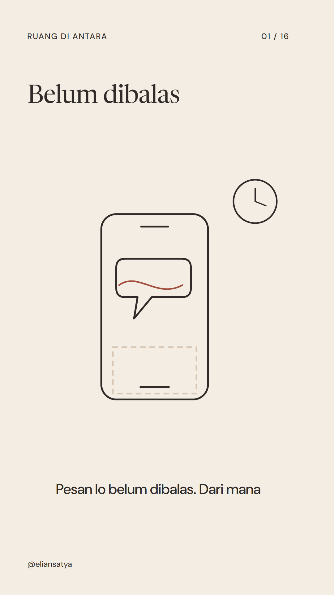
Pesan lo belum dibalas. Dari mana kesimpulan, dia udah nggak peduli, itu datang?
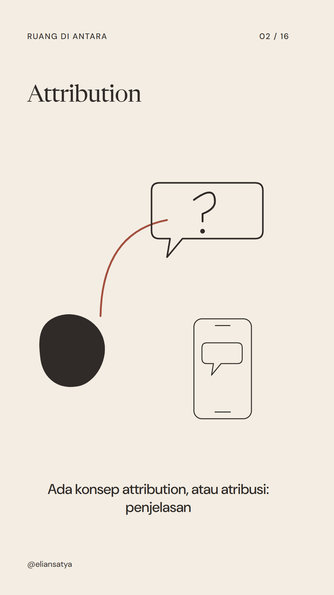
Ada konsep attribution, atau atribusi: penjelasan yang kita buat tentang penyebab perilaku seseorang.
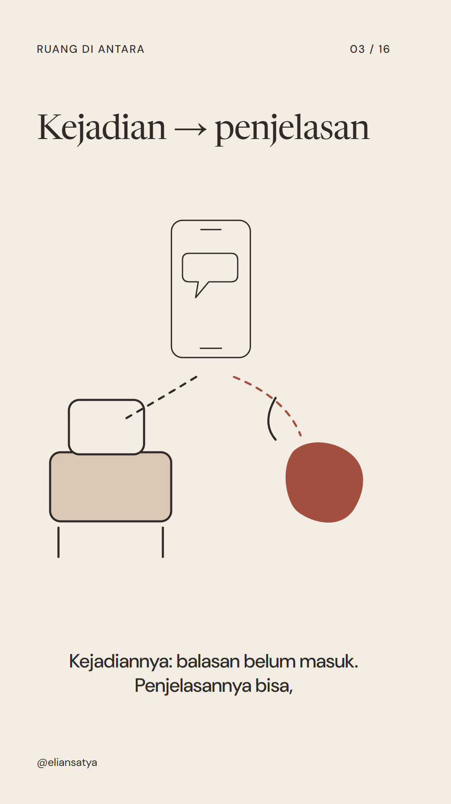
Kejadiannya: balasan belum masuk. Penjelasannya bisa, dia sibuk, atau dia sengaja menghindar.
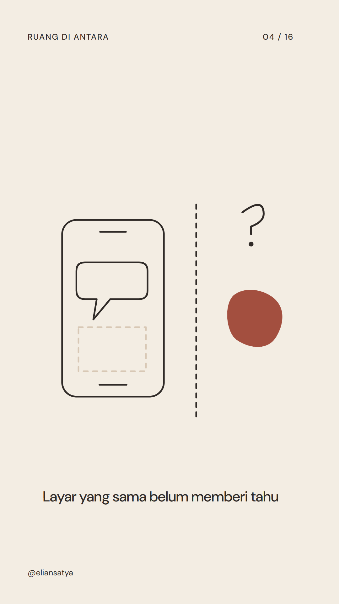
Layar yang sama belum memberi tahu alasan di belakangnya.
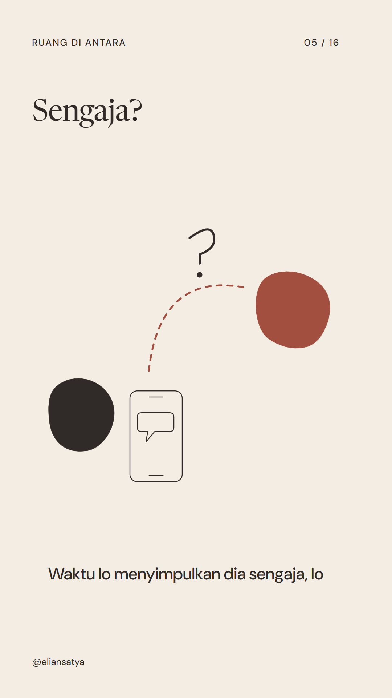
Waktu lo menyimpulkan dia sengaja, lo sedang menambahkan dugaan tentang niatnya.
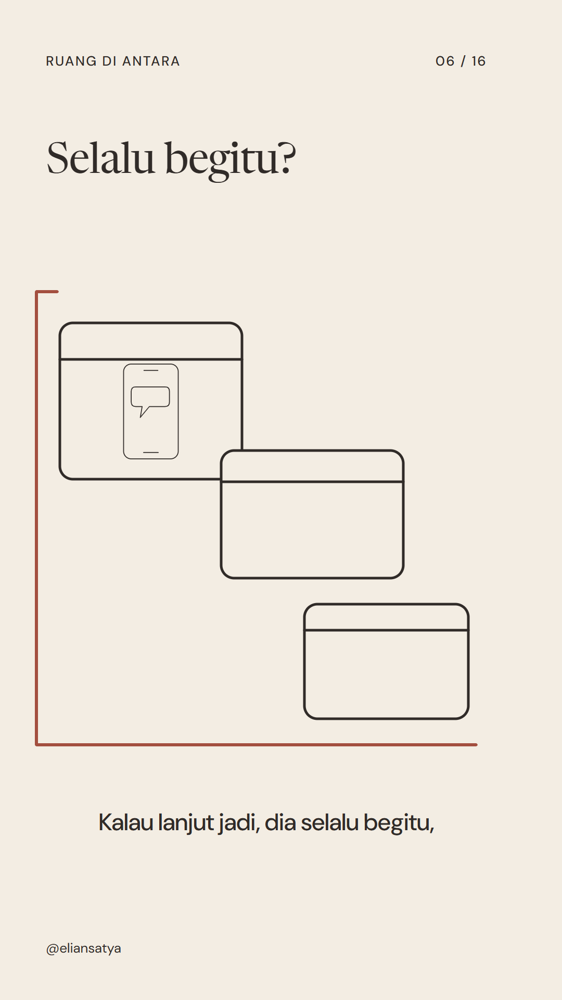
Kalau lanjut jadi, dia selalu begitu, satu kejadian mulai lo baca sebagai pola menetap.
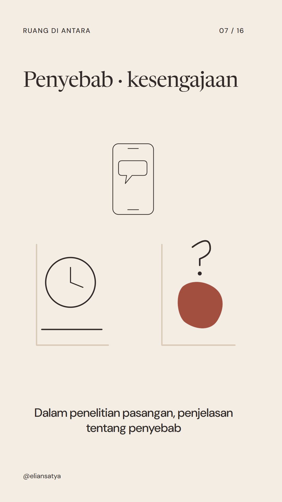
Dalam penelitian pasangan, penjelasan tentang penyebab dan penilaian tentang kesengajaan memang dibedakan.
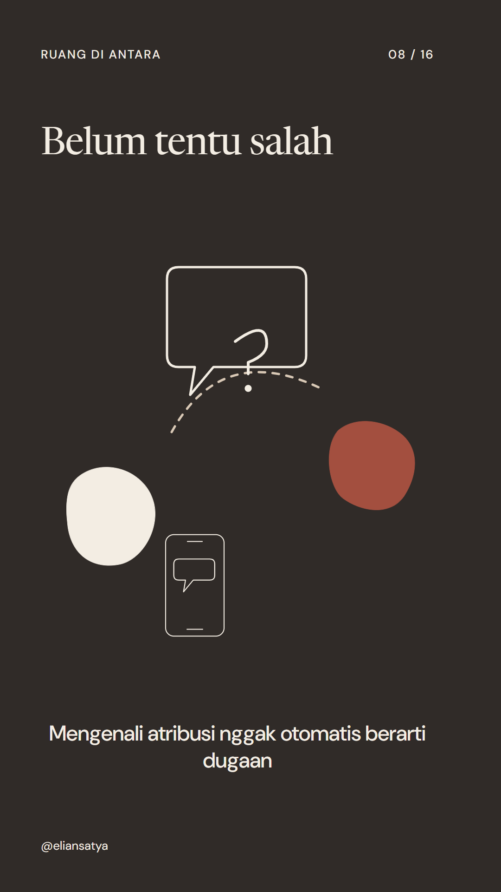
Mengenali atribusi nggak otomatis berarti dugaan lo salah.
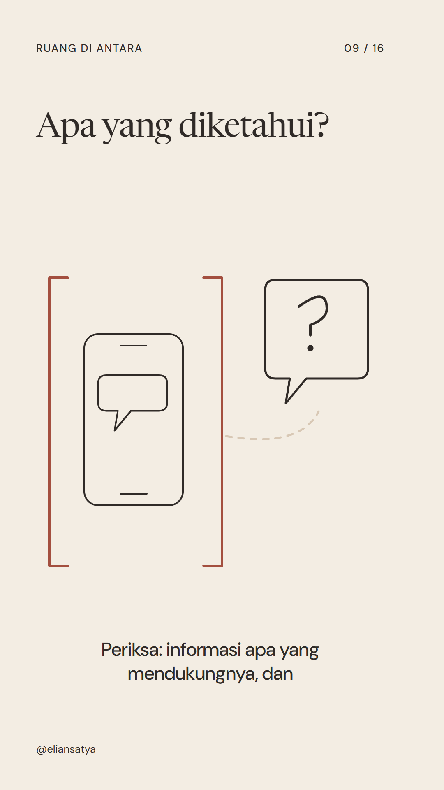
Periksa: informasi apa yang mendukungnya, dan apa yang masih belum lo tahu?
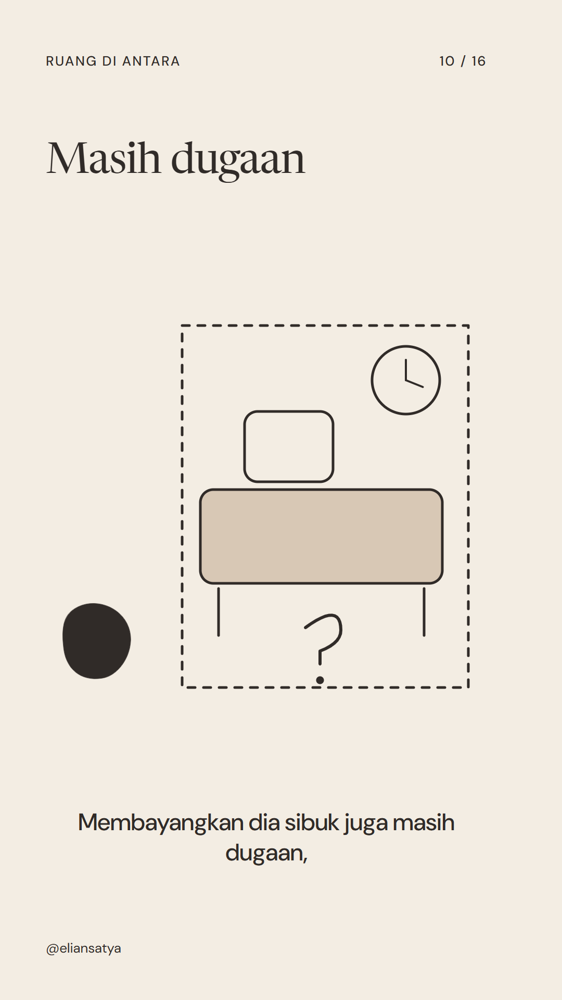
Membayangkan dia sibuk juga masih dugaan, sebelum ada informasi.
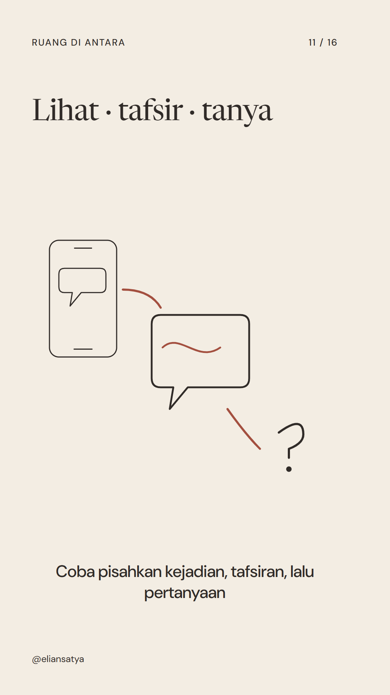
Coba pisahkan kejadian, tafsiran, lalu pertanyaan yang ingin lo ajukan.
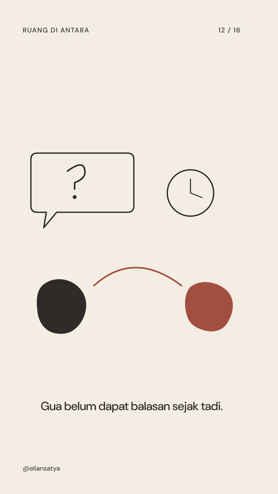
Gua belum dapat balasan sejak tadi. Gua jadi khawatir. Lo bisa ngobrol kapan?
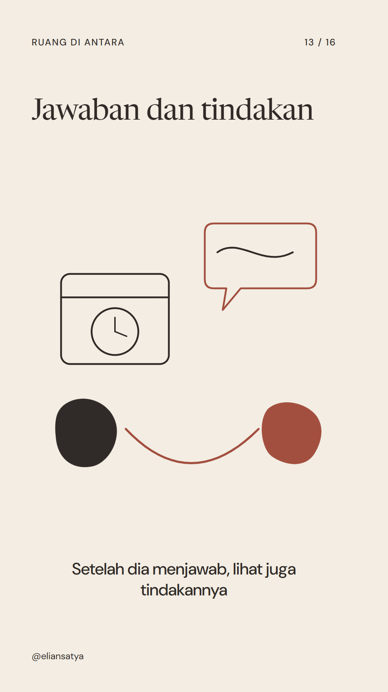
Setelah dia menjawab, lihat juga tindakannya dan kesepakatan kalian soal kabar.
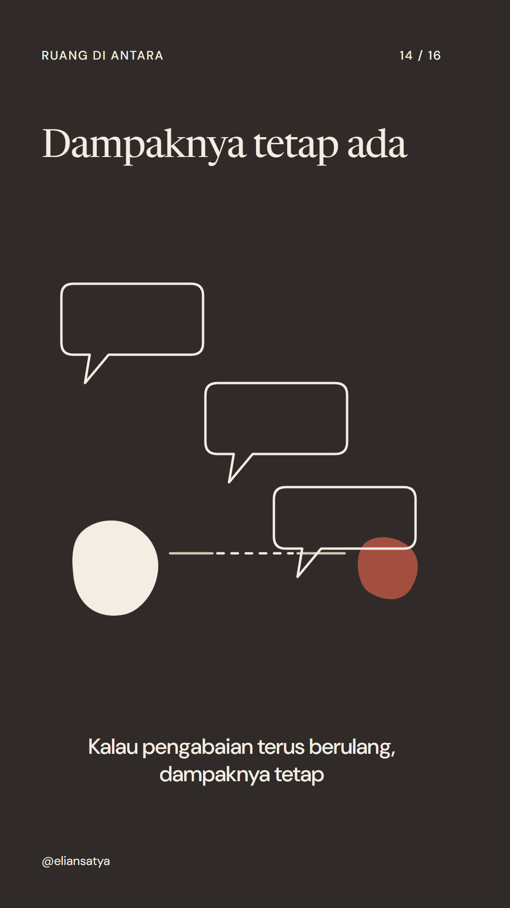
Kalau pengabaian terus berulang, dampaknya tetap layak dibahas.
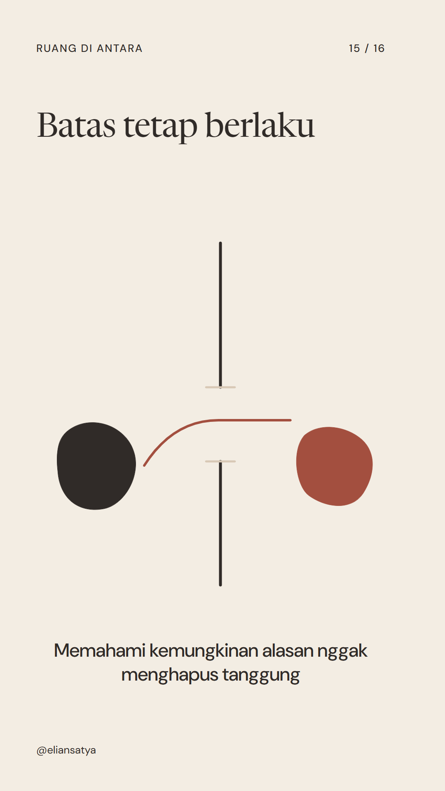
Memahami kemungkinan alasan nggak menghapus tanggung jawab atau batas yang lo butuhkan.
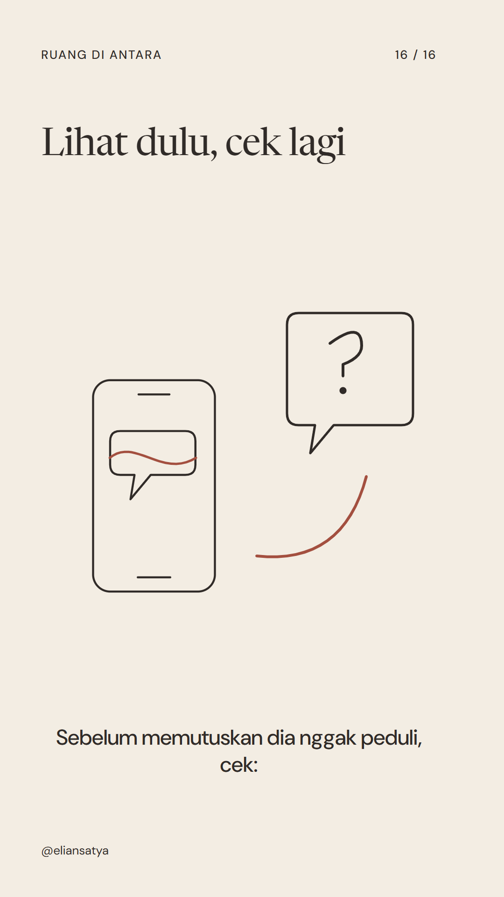
Sebelum memutuskan dia nggak peduli, cek: apa yang lo lihat, dan apa yang lo simpulkan?